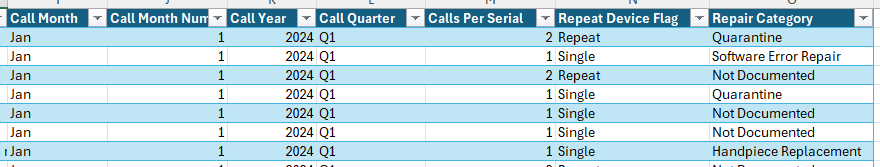
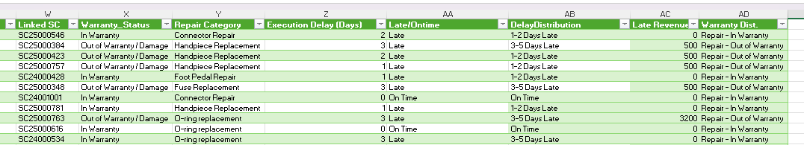

Serivce and Sales Order Data Analyis for Operational Excellence
Excel · KPIs · Dashboard · Pivot Tables · Advanced Formulas
Project Overview
This project analyzes service reliability and operational performance by linking repair history with sales order data in Excel.
It identifies recurring defects, evaluates order fulfillment efficiency, and highlights the financial impact of repair-driven
demand through an executive dashboard designed for leadership visibility.
Data Model
This project has two datasets (tables) Repair History 2024/25 and Sales Orders 2024/25.
There are four sheet supporting this analysis
- Repair History KPIs
- Sales Orders KPIs
- Dashboard
- Device Level Analysis
Helper columns for Repair History 2024/25, created with advanced formulas.

Linked the two tables with Service Call Number (SC000000) and included helper columns for Sales Orders 2024/25, created with advanced formulas.

Key Repair History KPIs
1. Total Service Calls per Quarter:
This company sells devices and handpieces.
When a customer or client calls to report an issue with a device, the technical support representative
determines the nature of the problem and creates a service call.
2. Total Service Calls by Malfunction:
This company sells devices and handpieces. Whenever a service call is created, the technical support representative
determines the exact malfunction and records it in the ERP system by selecting it from a predefined list.
3. Individual KPIs and Quality Audit:
Here, the Operations Manager can determine who is creating the most service calls (the names have been blanked, as this is real data with real names).
The Operations Manager can also see the quality of the calls being created. In this screenshot, we see that there are 984/2001
service calls where the technical team have not described the repairs they have carried out.
3. % of Total Service Calls by Repair Category:
Repair Category is a helper column. There is a screenshot below to show this.
Th second screenshot highlights the risk of improper data entry, as nearly 50% of the repairs are undocumented.
5. Critical Care Compliance:
Identify Critical Care Residential customers who were ever charged a Late Fee (should ideally have no service interruptions).
DAX snippett 1, Late Fees :
First we calculate transactions (payments and refunds), variance = late fees
DAX snippett 2, TDU Varaiance = Late Fees :
Identify Critical Care Residential customers who were ever charged a Late Fee (should ideally have no service interruptions).
You can find the source code and all other answered business questions
in the repository **UtilityCompanyAnalysis